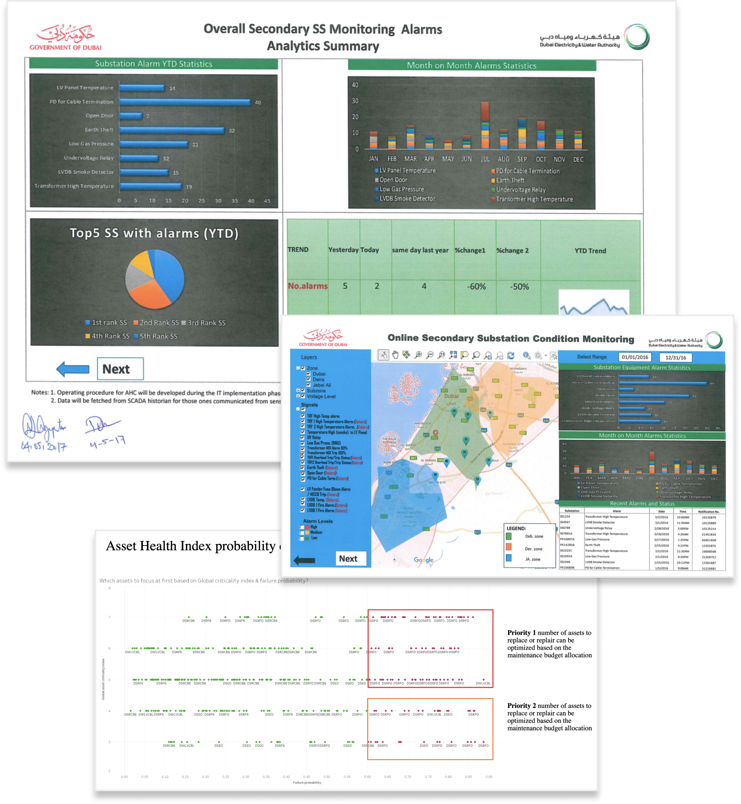

Decision Tool · Energy & Utilities
Dubai Electricity
Dubai Electricity
& Water Authority
Monitor and visualise all electrical assets in Dubai — and predict failures before they happen.
Monitor and visualise all electrical assets in Dubai — and predict failures before they happen.
DEWA needed to shift from reactive to predictive maintenance — giving operations teams real-time visibility over thousands of electrical assets spread across Dubai, with the ability to anticipate failures before they caused outages. The brief was to make complex infrastructure data legible and actionable at a glance.
I designed around the core operational mental model: zooming from city-wide asset overview down to individual component diagnosis. Each dashboard module was scoped and validated with DEWA operations teams to ensure the data hierarchy matched how engineers actually make decisions under pressure.
A five-module monitoring platform giving DEWA operations teams real-time visibility and predictive intelligence across Dubai's entire electrical infrastructure — from live alarm management and geospatial asset tracking to failure probability modelling and maintenance simulation.
The original interface presented raw infrastructure data with no visual hierarchy or decision-support layer. Engineers had to mentally assemble a picture of the city's asset health from tables and alerts — time-consuming and error-prone under operational pressure.

Each of the five modules was designed to support a specific decision-making moment in an engineer's day — from detecting active alarms to locating assets on a live map, assessing failure probability, and running maintenance simulations. The iMac context was used throughout to validate data density and readability at real operational screen sizes.

The delivered platform gives DEWA engineers a complete operational picture of Dubai's electrical grid — live alarms with severity ranking, geospatial asset location, failure probability heat maps, and a full maintenance simulator for scenario planning.